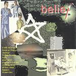

| Artist: | Primitive Instinct |
| Title: | Belief |
| Label: | Hidden Charm Records PICD006 |
| Distributor: | Disque.nl |
| Length(s): | 64 minutes |
| Year(s) of release: | 2000 |
| Month of review: | [02/2001] |
| 1) | A Little Bit Of Shek | 1.13 |
| 3) | Ideology | 4.59 |
| 4) | Finding My Way | 5.11 |
| 5) | Hope | 4.57 |
| 7) | Praying For The Rain | 8.19 |
| 9) | All That I Need | 5.33 |
| 10) | Freedom | 5.46 |
| 11) | Chosen Few | 9.25 |
For the Benelux the disc can be obtained at Disque.
The continuation is Break On Through that has synthetic strings in the style of The Blue Nile (Tinseltown In The Rain, remember), but also a rather active guitar (a bit in the style of the Cure). The percussion and guitarwork make for an energetic track against the backdrop of which Sheridan can sing his lyrics. Sheridan has a very pleasant voice, somewhat on the high side. The rhythm part of this track is quite nice, but does not have much variation. Quite poppy this track, but successfully so as well.
Although Ideology has about the same drive and even poppier as the previous disc, it does not really matter to me, when the optimistic melodies have such appeal. Easily hummed along after a single listen, the song even has an atmospheric intermezzo and some nice brimming organ.
Finding My Way is a ballad with acoustic guitar with again a great melody. One might think of Damian Wilsons solo record here, one of the more melodic ones. After a while power seeps into the song and the electric guitar runs of a solo in the melody of the track. A rather spaceous sounding affair.
Heavy guitars opens Hope, a bit in the style of late Porcupine Tree. The vocals sound lonelier than ever, as if he stands in a large room by himself. The rhythm section sounds rather modern, but the melancholy melody is again spot on, with just the right amount of shimmering keyboards in the back.
The opening melody returns on the longish Shekhakim, a willowy acoustic melody that is particularly haunting, slightly Arabic in style and featuring as a motif on this alternately easy-going and bombastic track. I was reminded a bit of late Marillion here. Sheridan has quite his heart on his tongue on this track. The climactic final part is quite noisy.
Next up is...Praying For The Rain, opening with uhm rain and a Pendragonish guitar and some nice percussive piano to boot. A bouncy track with plenty of keyboards and some nice spacey rhythm guitar. The "piece of dirt" line does not fit well, but the chorus is very good again. Not much variation on this one, but the lala at the end does work.
Crashing Down opens rather simple, a bit folky in style, with many backing vocals, but having a rather extensive keyboard part in the middle. It is not all that simple. All That I Need has a percussive opening and somewhat menacing keyboards in the back. Actually, the music succeeds very well in inciting a kind of happy feeling in me, during the choruses that is. It does end a bit abruptly.
Quietly we bounce on with Freedom. The final track is Chosen Few is with almost ten minutes the longest track. Again, the drumming is more on the percussive side and the song has some eerie soundscapes like effects. And of course, a memorable chorus to top it all off. The finale is rather atmospheric.
I found the artwork on the disc less than successful, a bit too chaotic.